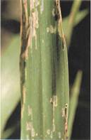

| Home |
| SORGHUM |
| 1. Sorghum Shootfly |
| 2. stem borer |
| 3. pink stem borer |
| 4. shoot bug |
| 5. earhead bug |
| 6. sorghum midge |
| 7. plant lice (Aphids) |
| 8. earhead web worm |
| 9. gram caterpiller |
| 10. plant bug |
| 11. stink bug |
| 12. mirid bug |
| 13. slug caterpiller |
| 14. Leaf roller |
| 15. flea beetle |
| 16. red hairy caterpiller |
| 17. semilooper |
| 18. weevils |
| 19. wingless grasshopper |
| Integrated Pest Management |
| Questions |
| Download Notes |
PESTS OF SORGHUM :: Minor Pests :: Flea Beetle
15. Flea beetle: Cryptocephalus schestedii, Monolepta signata (Chrysomelidae: Coleoptera)
Damage symptoms: It makes small holes on the leaves. |
 |